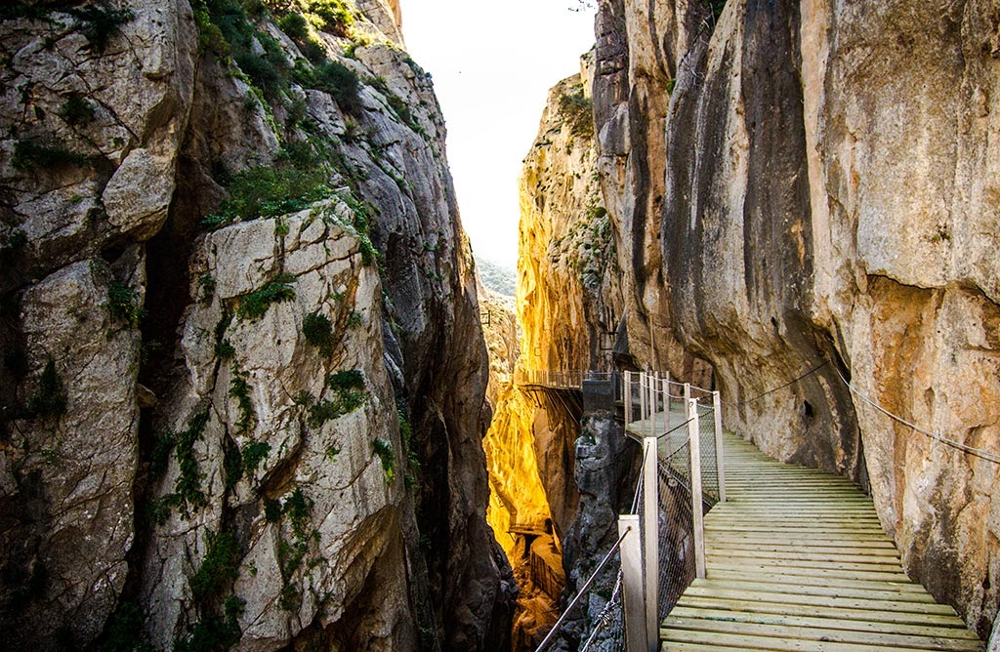
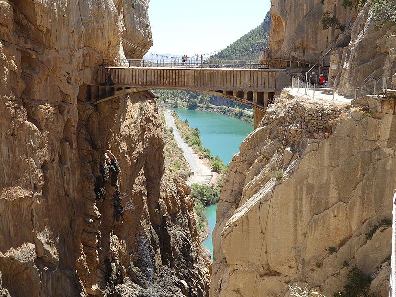
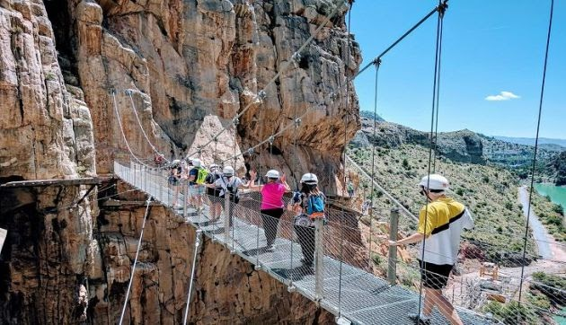
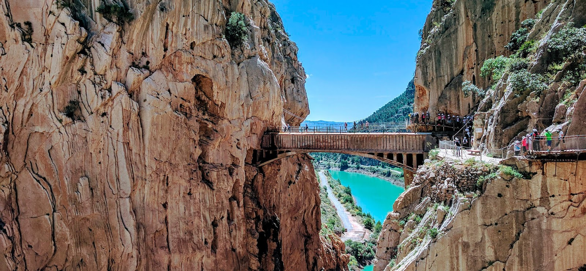

El Caminito del Rey
El Caminito del Rey es una pasarela peatonal construida en las paredes del desfiladero de los Gaitanes, cerca de Álora, en la provincia de Málaga. Se extiende por 7,7 km y ofrece vistas impresionantes a lo largo del recorrido.
Construido entre 1901 y 1905, el Caminito del Rey fue originalmente creado para facilitar el paso entre dos saltos de agua en el río Guadalhorce. Su nombre deriva de la visita del rey Alfonso XIII en 1921, quien lo cruzó en su inauguración.
Hoy en día, el Caminito del Rey es una de las principales atracciones turísticas de la provincia de Málaga. Los visitantes pueden disfrutar de una experiencia única recorriendo sus pasarelas y puentes suspendidos.